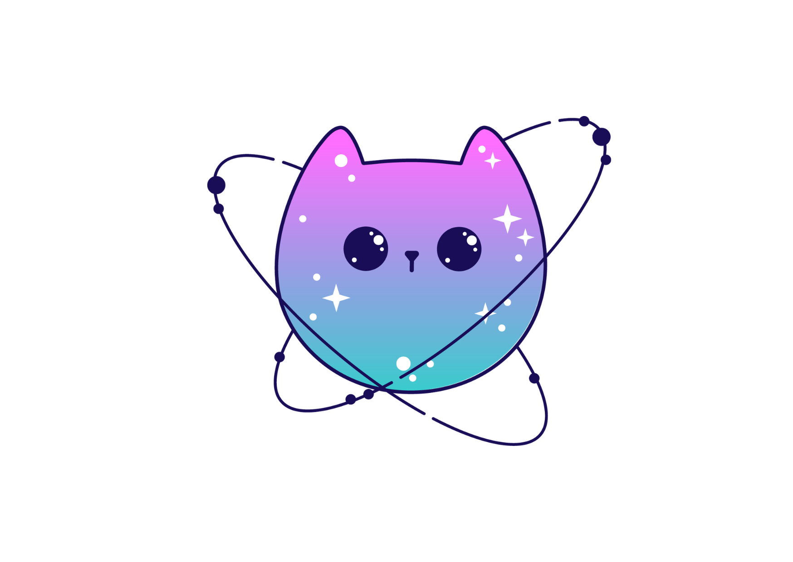

Northern Light Research Station
Live Aurora Borealis monitoring system powered by Earth observation and space weather analysis.

☀️ Solar Wind Speed
Speed of charged particles traveling from the Sun toward Earth.
🌫 Solar Wind Density
Particle density in interplanetary space near Earth.
🧲 Geomagnetic Activity (Kp)
Index measuring geomagnetic disturbance levels.
🌌 Aurora Probability
Estimated chance of visible aurora activity.
Earth Observation System
Real-time Earth monitoring with satellite imagery,solar illumination, geographic coordinates, and planetary data.

☀️ Sun Status: --
🌙 Moon Phase: --
🌑 Darkness Level: --
🛰 Station: ONLINE
Aurora Monitoring Station
Monitoring geomagnetic activity, solar wind conditions, and Aurora Borealis visibility opportunities.

Current Aurora Zone
Waiting for space weather data...
📍 Aurora Observation Location
Station: Tromsø, Norway
Latitude: 69.6492° N
Longitude: 18.9553° E
Region: Arctic Aurora Zone
Aurora Research Center
Additional monitoring information generated from current space weather conditions. This section helps interpret auroral activity and observation possibilities.
🌌 Aurora Activity Report
Current geomagnetic conditions affecting aurora formation.
📍 Best Viewing Locations
🇮🇸 Iceland
🇫🇮 Finnish Lapland
🇸🇪 Northern Sweden
🇨🇦 Yukon Canada
🇺🇸 Alaska
Regions with high probability of Aurora Borealis visibility.
🧲 Earth's Magnetic Shield
The Earth's magnetic field protects the planet from solar particles. When charged particles interact with this magnetic shield, energy is released as visible aurora light.
👁 Observation Conditions
🛰 Research Station Status
System: ONLINE
NOAA Data: MONITORING
Last Update: --